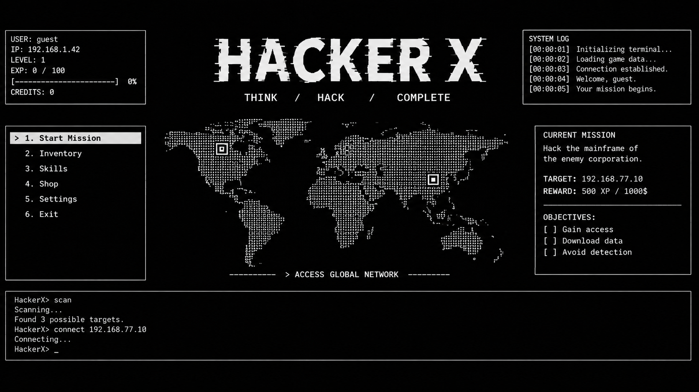

Valósághű parancssoros környezet. Kezeld a hálózatokat, teszteld a biztonsági rendszereket és futtass szkripteket egy zárt szimulációban.

Nincs grafikus felület. Kizárólag billentyűzetes vezérlés és szöveges kimenet.
Írj alapvető automatizált parancsokat a virtuális védelmi vonalak ellenőrzésére.
Helyi hálózaton és lokálisan futó motor, külső szerverkapcsolat nélkül.
A szoftver futtatásához töltsd le az alábbi tömörített állományt.
HACKER_X.ZIP LETÖLTÉSE